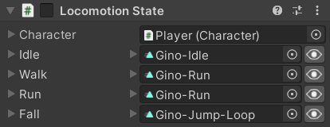

The LocomotionState allows the character to move around like the MobileIdleState, but instead of only having one animation, it has several different ones and can swap between Animancer's Animation States while remaining in this single Character State. This approach has several advantages compared to using a separate component for each animation:
- It doesn't require another script to continuously check which state the character should be in (this could be done with a Multi State though).
- Avoiding that extra script and not needing each state to have its own reference to the
Characteris slightly better for performance (though the difference is extremely small). - It makes it clear that these are the character's standard animations for moving around the environment and you can simply look at the
CurrentAnimationproperty to see how it decides which one to use instead of needing to look through multiple very short scripts to check each of their conditions. - Only needing to manage a single component is also a bit easier for development and avoids cluttering the Inspector.
Fields
The fields are Transitions for each of the animations involved in this state:
public class LocomotionState : CharacterState
{
[SerializeField]
private ClipTransition _Idle;
public ClipTransition Idle => _Idle;
[SerializeField]
private ClipTransition _Walk;
public ClipTransition Walk => _Walk;
[SerializeField]
private ClipTransition _Run;
public ClipTransition Run => _Run;
[SerializeField]
private ClipTransition _Fall;
public ClipTransition Fall => _Fall;
Note that the characters in the Platformer Game Kit don't actually have separate sprites for Walk and Run animations so they simply use the same one for both with the Transition's Speed changed.
It also uses an OnValidate method to apply the currently assigned Idle animation's first frame just like the IdleState:
#if UNITY_EDITOR
protected override void OnValidate()
{
base.OnValidate();
_Idle?.Clip.EditModeSampleAnimation(Character);
}
#endif
Animation Selection
The CurrentAnimation property determines which animation the character should currently be using:
- If the Character Body indicates that it isn't on the ground and a Fall animation is actually assigned then use that animation.
- If the Character Brain is trying to move then choose between Run and Walk depending on the
CharacterBrain.Runproperty (or just Walk if no Run animation is assigned). - Otherwise the character is standing still on the ground so play the Idle animation.
public ClipTransition CurrentAnimation
{
get
{
// If airbourne -> Fall.
if (!Character.Body.IsGrounded && _Fall.IsValid)
return _Fall;
// If trying to move -> Run or Walk.
if (Character.Brain.MovementDirection.x != 0)
return Character.Brain.Run && _Run.IsValid ? _Run : _Walk;
// Otherwise Idle.
return _Idle;
}
}
State Life Cycle
When the character first enters this state it plays the CurrentAnimation and then does so again every Update so that they will always be playing the appropriate animation for the character's current circumstances:
public override void OnEnterState()
{
base.OnEnterState();
Character.Animancer.Play(CurrentAnimation);
}
protected virtual void Update()
{
Character.Animancer.Play(CurrentAnimation);
}
And while it's active, it allows the character to move at full speed regardless of which animation is playing:
public override float MovementSpeedMultiplier => 1;
}